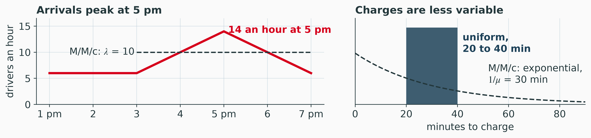
Simulation
Monte Carlo, Queues and Validation
Sebastian Souyris
MGMT 4100 Fall 2026
Roadmap
\[ \newcommand{\argmax}{\operatorname*{argmax}} \newcommand{\argmin}{\operatorname*{argmin}} \newcommand{\E}{\operatorname{\mathbb{E}}} \newcommand{\Var}{\operatorname{Var}} \newcommand{\Cov}{\operatorname{Cov}} \newcommand{\Corr}{\operatorname{Corr}} \newcommand{\plim}{\operatorname{plim}} \newcommand{\tr}{\operatorname{tr}} \newcommand{\rank}{\operatorname{rank}} \newcommand{\N}{\mathcal{N}} \newcommand{\R}{\mathbb{R}} \newcommand{\iid}{\overset{\text{i.i.d.}}{\sim}} \newcommand{\inprob}{\xrightarrow{\;p\;}} \newcommand{\indist}{\xrightarrow{\;d\;}} \newcommand{\eps}{\varepsilon} \newcommand{\bm}[1]{\boldsymbol{#1}} \]
- Part I
- Part II
- Replications and the Standard Error
- Decisions by Simulation: Expected Profit, Newsvendor
- Queue Simulation by Hand: Arrivals, Service and Waits
- Validation: Known Answers and the Warm-Up Period
- Multi-Server Simulation: Peaks and Wait Distributions
- Simulation and AI: Testing Policies, Checking Code
- Practice: Simulating a Queue by Hand
- Summary
Simulation and the Flaw of Averages
Example 1: Electric Vehicle Chargers at the Peak
The Waiting Lines lecture’s M/M/c model of the electric vehicle (EV) chargers: \(\lambda = 10\) drivers/hr; service exponential, \(1/\mu = 0.5\) hr/charge \(= 30\) min/charge. Empirically, the plaza’s records show the following:
Discuss
6, 7 or 8 chargers? Part II simulates this queue.
Example 2: How Many Pastries to Bake
The coffee counter bakes pastries before opening (fictional numbers):
| Pastries demanded \(d\) | 120 | 160 | 200 | 240 | 280 |
|---|---|---|---|---|---|
| Probability \(P(d)\) | 0.10 | 0.20 | 0.40 | 0.20 | 0.10 |
Cost $1.20, price $3.00, leftovers sold at $0.50. Bake \(Q\); \(D\) are demanded:
\[ \text{Profit} = 3.00 \min(Q, D) + 0.50 \max(Q - D,\, 0) - 1.20\,Q \]
\[ E[D] = \textstyle\sum_d d\,P(d) = 0.1(120) + 0.2(160) + 0.4(200) + 0.2(240) + 0.1(280) = 200 \]
Decision
How many pastries to bake, and what will an average morning earn?
The Flaw of Averages
Plan for the average, \(Q = D = 200\):
\[ 3.00(200) - 1.20(200) = \$360 \]
The mornings themselves, baking 200:
\[ \begin{aligned} E[\text{Profit}] &= \textstyle\sum_d P(d)\,\text{Profit}(200, d) \\ &= 0.1(160) + 0.2(260) + 0.7(360) \\ &= \textcolor{#D6001C}{\mathbf{\$320}} \end{aligned} \]
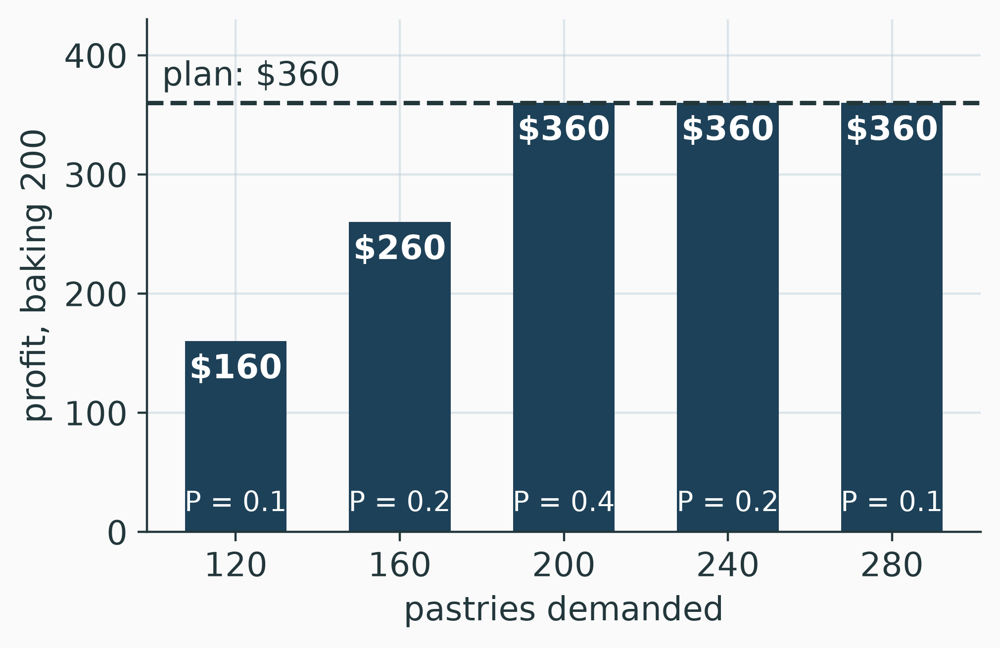
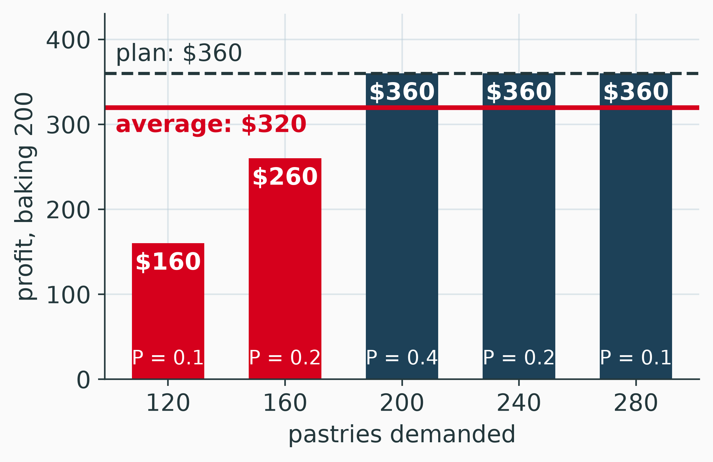
The flaw of averages
The plan’s $360 overstates the average, $320: each leftover loses \(1.20 - 0.50 = \$0.70\), each missed sale \(3.00 - 1.20 = \$1.80\).
Monte Carlo by Hand: Random-Number Ranges
Monte Carlo Simulation
Monte Carlo simulation
Draw a value for each uncertain input from its probability distribution, compute the outcome, and repeat. The average over many trials estimates the expected outcome.
- A probability distribution for each uncertain input (pastries demanded).
- A uniform random number \(u\) per trial, \(u \sim U(0, 1)\): every value from 0 to 1 equally likely.
- The inverse transform: look \(u\) up in the cumulative distribution.
- Compute the outcome; repeat; average; report the precision.
The Inverse Transform Is a Lookup
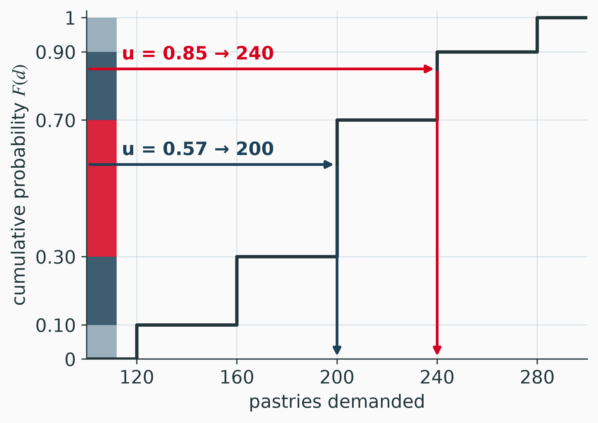
- Stack the probabilities from 0 to 1: the cumulative distribution, \(F(d) = P(D \le d)\).
- Demand is the smallest \(d\) with \(F(d) > u\): the band \(u\) lands in.
- A band 0.40 tall is hit 40% of the time, so demand is 200 with probability 0.40.
Random-Number Ranges
| Pastries demanded \(d\) | Probability \(P(d)\) | Cumulative \(F(d)\) | Random number \(u\) |
|---|---|---|---|
| 120 | 0.10 | 0.10 | \(0.00 \le u < 0.10\) |
| 160 | 0.20 | 0.30 | \(0.10 \le u < 0.30\) |
| 200 | 0.40 | 0.70 | \(0.30 \le u < 0.70\) |
| 240 | 0.20 | 0.90 | \(0.70 \le u < 0.90\) |
| 280 | 0.10 | 1.00 | \(0.90 \le u < 1.00\) |
Read the ranges off the cumulative column
Demand \(d\) takes the range \(F(\text{row above}) \le u < F(d)\): it starts at the cumulative probability of the rows above and stops just below its own. The range for 200 is 0.40 wide, so a uniform \(u\) lands in it 40% of the time.
Ten Mornings by Hand
A row of uniform random numbers, one per morning:
| Morning \(i\) | 1 | 2 | 3 | 4 | 5 | 6 | 7 | 8 | 9 | 10 |
|---|---|---|---|---|---|---|---|---|---|---|
| \(u_i\) | 0.85 | 0.57 | 0.93 | 0.34 | 0.56 | 0.75 | 0.91 | 0.08 | 0.73 | 0.10 |
| \(d_i\) | 240 | 200 | 280 | 200 | 200 | 240 | 280 | 120 | 240 | 160 |
\[ \begin{aligned} \bar{d} &= \frac{1}{n} \sum_{i=1}^{n} d_i \\ &= \frac{240 + 200 + 280 + 200 + 200 + 240 + 280 + 120 + 240 + 160}{10} = \frac{2{,}160}{10} = \textcolor{#D6001C}{\mathbf{216}} \end{aligned} \]
Ten Mornings Against the Expected Value
The table says demand averages \(E[D] = \sum_d d\,P(d) = 200\). Ten mornings gave \(\bar{d} = 216\).
| Pastries demanded \(d\) | 120 | 160 | 200 | 240 | 280 |
|---|---|---|---|---|---|
| Expected in 10 mornings, \(10\,P(d)\) | 1 | 2 | 4 | 2 | 1 |
| Simulated | 1 | 1 | 3 | 3 | 2 |
A small sample strays
Ten mornings are a small sample. This one drew five 240s and 280s where three were expected, which pulled the average up to 216. The next section measures how far an average of \(n\) mornings can stray from 200.
Monte Carlo in Excel: RAND, VLOOKUP, Standard Error
RAND and VLOOKUP
=RAND(): a pseudo-random number between 0 and 1, made by an algorithm, new at every recalculation.=VLOOKUP(B16, $A$5:$B$9, 2, TRUE): the demand of the last range start at or below B16.
| A: random number from | B: pastries demanded |
|---|---|
| 0.0 | 120 |
| 0.1 | 160 |
| 0.3 | 200 |
| 0.7 | 240 |
| 0.9 | 280 |
VLOOKUP with TRUE
The range starts go in the first column, in increasing order. A random number of 0.57 finds 0.3, the last start at or below it, and returns 200.
1,000 Mornings
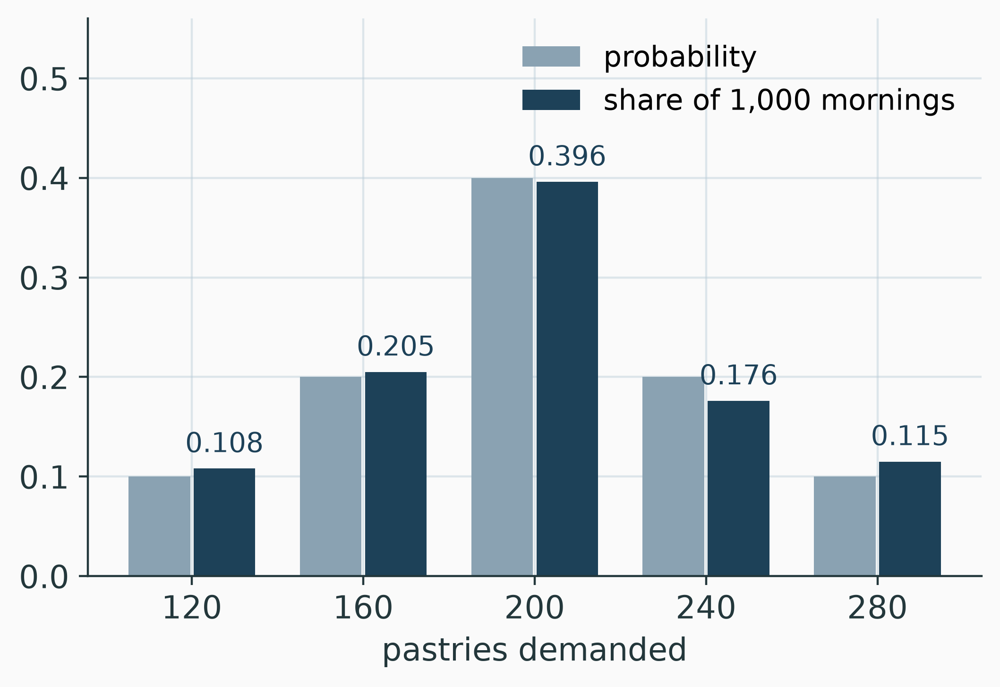
One run of \(n = 1{,}000\) mornings:
\[ \bar{d} = \frac{1}{n}\sum_{i} d_i = \mathbf{199.4} \]
\[ s = \sqrt{\frac{\sum_{i} (d_i - \bar{d})^2}{n - 1}} = 45.1 \]
Each share lands within about 0.02 of its probability. Ten mornings missed the 0.40 by 0.10.
The Standard Error
The counter bakes before demand is known, so it plans on average demand. Simulating \(n\) mornings estimates it by \(\bar{d}\), with standard error (\(SE\)):
| \(n\) | \(s = \sqrt{\sum_i (d_i - \bar{d})^2/(n - 1)}\) | \(SE = s/\sqrt{n}\) | 95%: \(\bar{d} \pm 1.96\,SE\) |
|---|---|---|---|
| 10 | \(\sqrt{23{,}040/9} = 50.6\) | \(50.6/\sqrt{10} = 16.0\) | \(216 \pm 1.96(16.0) = 216 \pm 31.4\) |
| 1,000 | \(45.1\) | \(45.1/\sqrt{1{,}000} = 1.43\) | \(199.4 \pm 1.96(1.43) = 196.6 \text{ to } 202.2\) |
Report the standard error
Ten mornings put average demand anywhere from 185 to 247 pastries, too wide to set a bake; a thousand pin it to 197 to 202, around the table’s 200.
Workbook: The Demand Sheet
Download Monte_Carlo.xlsx and open the Demand sheet
The table is A5:E9: range starts in A, demand in B, probabilities in C (blue inputs), cumulative in D, ranges in E. The 1,000 mornings are rows 16 to 1015, =RAND() in column B and VLOOKUP in column C. The average is in I9, \(s\) in I10, the standard error in I11 and the 95% interval in I12:I13.
Try this
- Recalculate five times: F9 on Windows, Cmd+= on a Mac. How far does the average in
I9move? Compare with the standard error inI11. - Set the probabilities in
C5:C9to 0.2 each. What shouldI9approach, and what happens to the ranges inE?
Practice: Simulating Demand by Hand
Practice Problem
Breakfast sandwiches
The coffee counter also makes breakfast sandwiches each morning.
| Sandwiches demanded | 30 | 40 | 50 | 60 |
|---|---|---|---|---|
| Probability | 0.15 | 0.25 | 0.40 | 0.20 |
- Build the cumulative column and the ranges of \(u\).
- Simulate eight mornings with the random numbers \(u\): 0.87, 0.74, 0.66, 0.49, 0.12, 0.41, 0.39, 0.86.
- Compare the average simulated demand with the expected demand.
- The counter makes 50 sandwiches a morning at $2 each, sells them at $5 and throws away the rest. Find each simulated morning’s profit and their average.
Part I Summary
Core takeaways
- The outcome at the average input is not the average outcome: $360 against $320
- Monte Carlo: a random number, a lookup in the cumulative distribution, an outcome; repeat and average
- A simulated average carries a standard error, \(s/\sqrt{n}\)
Watch out for
- A range starts at the cumulative probability of the rows above it
- VLOOKUP needs the range starts in its first column
- Ten trials are a small sample: 216 against 200
Bottom line
Draw the uncertain inputs from their distributions, and report every simulated average with its standard error.
Part II
Decisions, Queues and Validation
Replications and the Standard Error
Recall: How Many Pastries to Bake
The coffee counter bakes \(Q\): cost $1.20, price $3.00, leftovers $0.50; demand \(D\):
| Pastries demanded \(d\) | 120 | 160 | 200 | 240 | 280 |
|---|---|---|---|---|---|
| Probability \(P(d)\) | 0.10 | 0.20 | 0.40 | 0.20 | 0.10 |
\[ \text{Profit}(Q, D) = 3.00 \min(Q, D) + 0.50 \max(Q - D,\, 0) - 1.20\,Q \]
- Baking 200: the plan earns \(\text{Profit}(200, 200) = \$360\); the mornings average \(E[\text{Profit}(200)] = \sum_d P(d)\,\text{Profit}(200, d) = \$320\).
- This lecture’s decision: the \(Q\) with the highest \(E[\text{Profit}(Q)]\).
Where Part I Ended
| Mornings simulated \(n\) | Average demand \(\bar{d} = \frac{1}{n}\sum_i d_i\) | Standard error \(s/\sqrt{n}\) |
|---|---|---|
| 10 | 216.0 | 16.0 |
| 1,000 | 199.4 | 1.43 |
- The table’s expected demand is \(E[D] = \sum_d d\,P(d) = \mathbf{200}\).
- Each simulated average is an estimate; its standard error says how far it can stray.
- This lecture: how many runs a decision needs, then a decision, then queues.
Four Times the Runs, Half the Error
With \(\sigma = \sqrt{\textstyle\sum_d (d - 200)^2\,P(d)} = \sqrt{1{,}920} = 43.8\) and \(SE = \sigma/\sqrt{n}\):
| Mornings \(n\) | 10 | 100 | 1,000 | 10,000 |
|---|---|---|---|---|
| \(SE = 43.8/\sqrt{n}\) | 13.9 | 4.38 | 1.39 | 0.44 |
To plan a bake: within \(\pm E\), \(E = 10\) pastries (\(10/200 = 5\%\)), 95% of the time:
\[ 1.96\,\frac{\sigma}{\sqrt{n}} \le E \quad\Longrightarrow\quad n \ge \left(\frac{1.96\,\sigma}{E}\right)^2 = \frac{1.96^2 \times 1{,}920}{10^2} = 73.8 \text{, so } 74 \text{ mornings} \]
Precision costs runs
One more digit, \(E = 1\), needs \(1.96^2 \times 1{,}920 / 1^2 = 7{,}376\) mornings: 100 times the runs, since the error falls only with \(\sqrt{n}\).
Watch the Average Settle
Drag the number of mornings. The line is the running average \(\bar{d}_n = \frac{1}{n}\sum_{i \le n} d_i\), the band its 95% interval \(\bar{d}_n \pm 1.96\,s/\sqrt{n}\). New draw: another run of 1,000 mornings.
Show code
Show code
Show code
// The grid is the gallery's .rpi-controls with a column for the button,
// as deck 07's simulator. The slider is on a log scale, so the first ten
// mornings get as much travel as the last nine hundred.
viewof mcIn = Inputs.form(
{
n: Inputs.range([10, 1000], {value: 10, step: 1, transform: Math.log, label: "Mornings n"}),
draw: Inputs.button("New draw")
},
{ template: (i) => htl.html`<div class="rpi-controls rpi-mc">
<style>
.reveal .rpi-controls.rpi-mc { grid-template-columns: 1fr auto; align-items: center; }
.reveal .rpi-controls.rpi-mc form { --label-width: 130px; --input-width: 420px; }
</style>
${i.n}${i.draw}</div>` }
)Show code
// Welford's running mean and variance over the first n mornings of the
// run; the 95% band is mean +- 1.96 s / sqrt(k).
mcPath = {
const run = mcIn.draw % mcRuns.d.length, d = mcRuns.d[run], n = mcIn.n;
let mean = 0, m2 = 0;
const path = [];
for (let k = 1; k <= n; k++) {
const x = d[k - 1], delta = x - mean;
mean += delta / k;
m2 += delta * (x - mean);
const se = k > 1 ? Math.sqrt(m2 / (k - 1)) / Math.sqrt(k) : NaN;
path.push({k, mean, lo: mean - 1.96 * se, hi: mean + 1.96 * se, se});
}
return {run, n, path, last: path[path.length - 1]};
}Show code
Plot.plot({
...frame,
height: 262,
marginTop: 22,
x: {type: "log", label: "Mornings simulated →", domain: [1, 1000],
ticks: [1, 2, 5, 10, 20, 50, 100, 200, 500, 1000], tickFormat: d3.format(",")},
y: {label: "↑ Average demand", domain: [130, 270], grid: true},
marks: [
Plot.areaY(mcPath.path.filter(p => p.k >= 5), {x: "k", y1: "lo", y2: "hi",
fill: rpi.blue, fillOpacity: 0.16, clip: true}),
Plot.ruleY([mcRuns.mean], {stroke: rpi.ink, strokeDasharray: "6 4", strokeWidth: 1.4}),
Plot.text([{k: 1.05, y: mcRuns.mean}], {x: "k", y: "y", text: () => "expected 200",
dy: -9, textAnchor: "start", fill: rpi.ink, fontSize: 12}),
Plot.line(mcPath.path, {x: "k", y: "mean", stroke: rpi.red, strokeWidth: 2.2, clip: true}),
Plot.dot([mcPath.last], {x: "k", y: "mean", r: 6, fill: rpi.red}),
Plot.text([`run ${mcPath.run + 1} of ${mcRuns.d.length}`], {frameAnchor: "top-right",
dx: -4, dy: 4, fill: rpi.ink, fontSize: 12})
]
})Show code
htl.html`<div class="rpi-readout">
n = <b>${mcPath.n}</b> mornings · average <b>${mcPath.last.mean.toFixed(1)}</b>
· standard error ${mcPath.last.se.toFixed(2)}
· 95% interval ${mcPath.last.lo.toFixed(1)} to ${mcPath.last.hi.toFixed(1)}
· ${Math.abs(mcPath.last.mean - mcRuns.mean) <= 1.96 * mcPath.last.se ? "holds 200" :
htl.html`<b style="color: ${rpi.red}">misses 200</b>`}</div>`Replications in Excel: A Data Table
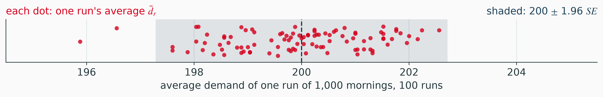
Download Monte_Carlo.xlsx and open the Replications sheet
B7:F7 read one run’s answers; A8:A107 number the runs. Select A7:F107, then Data > What-If Analysis > Data Table, column input cell B4 (empty). Each row recalculates every RAND(): 100 fresh runs.
One run’s \(SE = \sigma/\sqrt{n} = 43.8/\sqrt{1{,}000} = 1.39\) predicts the spread. The 100 averages, with mean \(m\), spread by \(\sqrt{\sum_r (\bar{d}_r - m)^2/99} = \mathbf{1.30}\).
Decisions by Simulation: Expected Profit, Newsvendor
The Newsvendor Problem
The newsvendor problem: order \(Q\) units once, before demand \(D\) is known, for one selling season: newspapers, pastries, flu vaccine, winter coats. Price \(p\), unit cost \(c\), salvage value \(s\) a unit left over.
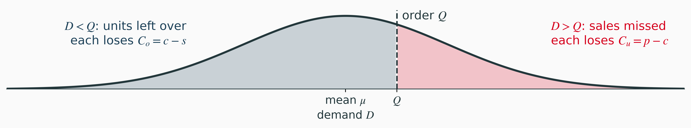
The trade-off
A larger \(Q\) misses fewer sales and leaves more units over. Which \(Q\) balances \(C_u\) and \(C_o\)?
The Critical Fractile
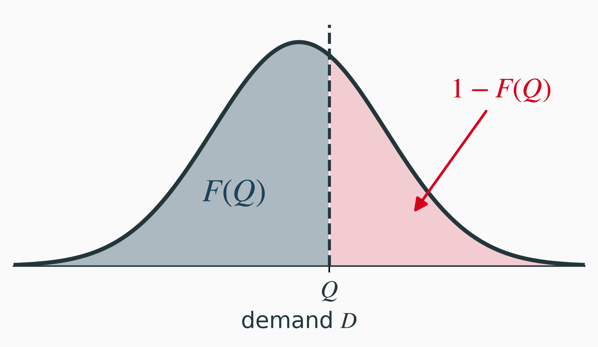
\(F(Q) = P(D \le Q)\): the chance that demand is at most \(Q\), the blue area.
| The \((Q + 1)\)th unit | Probability | Gain |
|---|---|---|
| sells, \(D > Q\) | \(1 - F(Q)\) | \(+C_u\) |
| is left over, \(D \le Q\) | \(F(Q)\) | \(-C_o\) |
\[ \text{gain}(Q) = C_u\,[1 - F(Q)] - C_o\,F(Q) > 0 \quad\iff\quad F(Q) < \frac{C_u}{C_u + C_o} \]
Order up to the critical fractile
Add units while the gain is positive. The best \(Q^*\) has \(F(Q^*) = C_u/(C_u + C_o)\): it covers demand with that probability.
Normal Demand: \(Q^* = \mu + z\,\sigma\)
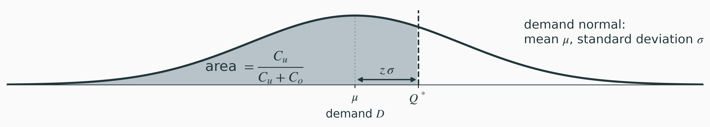
\[ Q^* = \mu + z\,\sigma, \qquad \text{where } \Phi(z) = \frac{C_u}{C_u + C_o} \]
\(\Phi\) is the standard normal \(F\): read \(z\) from the normal table, or use =NORM.INV(fractile, mean, sd).
Which side of the mean?
\(C_u > C_o\): fractile above 0.5, \(z > 0\), order above mean demand. \(C_u < C_o\): below it.
Vote: Bake 200, 220 or 240?
Cost $1.20, price $3.00, leftovers $0.50. Demand, with \(E[D] = \sum_d d\,P(d) = 200\):
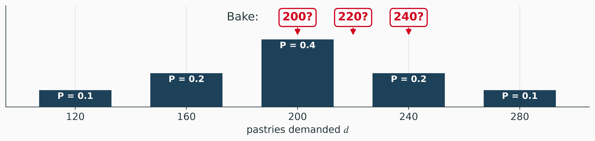
Hands up
Bake 200, 220 or 240? This section ends with the answer.
Too many: leftovers at $0.50. Too few: lost sales. Which mistake costs more?
Bake 220: One Morning, Then the Average
\[ \text{Profit}(Q, D) = 3.00 \min(Q, D) + 0.50 \max(Q - D,\, 0) - 1.20\,Q \]
A slow morning, demand 160: sell 160, 60 left over.
\[ \text{Profit}(220, 160) = 3.00(160) + 0.50(60) - 1.20(220) = \$246 \]
At every demand, a one-row payoff table; \(E[\text{Profit}(220)] = \sum_d P(d)\,\text{Profit}(220, d)\):
| Demand \(d\) | 120 | 160 | 200 | 240 | 280 |
|---|---|---|---|---|---|
| Probability \(P(d)\) | 0.1 | 0.2 | 0.4 | 0.2 | 0.1 |
| \(\text{Profit}(220, d)\) | 146 | 246 | 346 | 396 | 396 |
\[ E[\text{Profit}(220)] = 0.1(146) + 0.2(246) + 0.4(346) + 0.3(396) = \$321 \]
Can Simulation Rank 220 Above 200?
The exact edge: \(E[\text{Profit}(220)] - E[\text{Profit}(200)] = 321 - 320 = \$1\) a morning.
Each dot, one run of 1,000 mornings: \(\bar{\Delta} = \overline{\text{Profit}}(220) - \overline{\text{Profit}}(200)\).
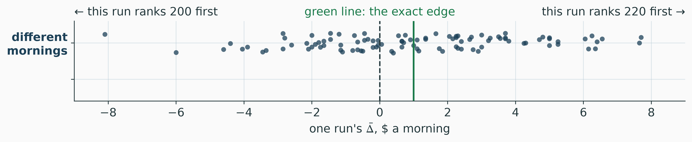
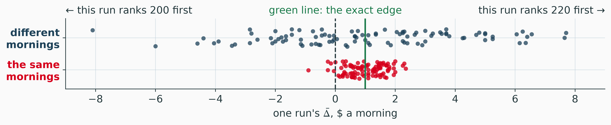
Compare on the same mornings
Same demands for both (common random numbers): 220 is ahead in 94 of 100 runs. On different mornings: 59 of 100, close to a coin toss.
Mornings Needed to See a $1 Edge
Bake 220 in place of 200, 20 more pastries: \(\Delta = \text{Profit}(220, D) - \text{Profit}(200, D)\).
\[ \Delta = \begin{cases} 20\,(0.50 - 1.20) = -\$14, & D \le 200 \text{: 20 more leftovers, probability } 0.7 \\ 20\,(3.00 - 1.20) = +\$36, & D \ge 240 \text{: 20 more sales, probability } 0.3 \end{cases} \]
\[ E[\Delta] = \textstyle\sum P\,\Delta = 0.7(-14) + 0.3(36) = \$1 \]
\[ \sigma_\Delta^2 = \textstyle\sum P\,(\Delta - E[\Delta])^2 = 0.7(-15)^2 + 0.3(35)^2 = 525 \]
\[ 2\,\frac{\sigma_\Delta}{\sqrt{n}} \le E[\Delta] \quad\Longrightarrow\quad n \ge \frac{4\,\sigma_\Delta^2}{E[\Delta]^2} = \frac{4 \times 525}{1^2} = 2{,}100 \text{ mornings} \]
Two standard errors must fit under the edge
Decide first what difference would change the decision, then run that long.
The Pastry Counter’s Critical Fractile
Missed sale \(C_u\), leftover \(C_o\):
\[ \begin{aligned} C_u &= p - c = 3.00 - 1.20 = \$1.80 \\ C_o &= c - s = 1.20 - 0.50 = \$0.70 \end{aligned} \]
\[ \frac{C_u}{C_u + C_o} = \frac{1.80}{1.80 + 0.70} = 0.72 \]
Smallest \(Q\) with \(F(Q) \ge 0.72\):
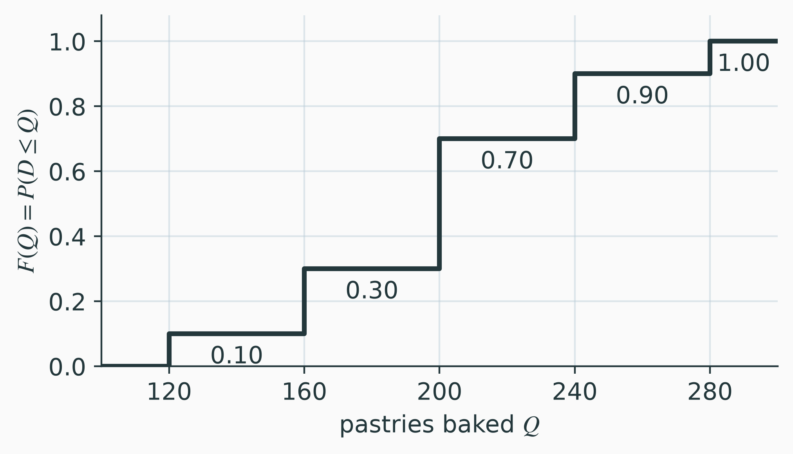
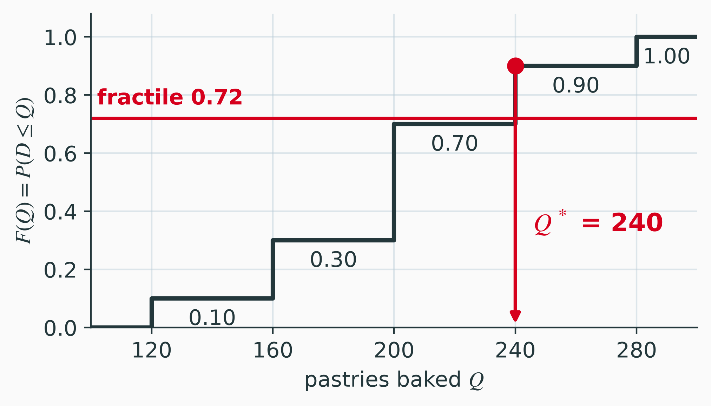
Bake 240
\(F(200) = 0.70\) falls short; \(F(240) = 0.90\) is the first step to reach 0.72. A missed sale costs more than twice a leftover: bake above average demand.
The Vote, Settled: A Flat Top
Every bake quantity, exactly: \(E[\text{Profit}(Q)] = \sum_d P(d)\,\text{Profit}(Q, d)\).
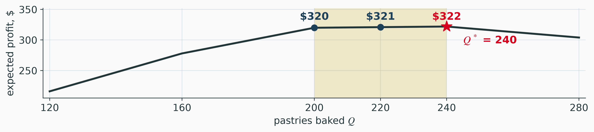
Every quantity from 200 to 240 earns within \(322 - 320 = \$2\) of the best.
Three ways to one decision
The table is exact; the fractile gives \(Q^*\) in one line. Simulation takes over when the states are too many to list, as at the chargers.
Workbook: The Decision Sheet
Download Monte_Carlo.xlsx and open the Decision sheet
Price, cost and salvage are inputs in B4:B6, the bake quantities in C8:E8. The exact payoff table is A10:F14, expected profit in row 15; column F prices the newsvendor quantity in B20. Rows 24 to 1023 price the 1,000 mornings; I9:L11 give the average, standard deviation and standard error, with 220 minus 200 in column L.
Try this
- Set the salvage in
B6to 0 (leftovers thrown away). What happens to the fractile inB19and the quantity inB20? - Recalculate ten times (F9 on Windows, Cmd+= on a Mac). How often does
L9favor 220? Compare with the Replications sheet’sI12.
Queue Simulation by Hand: Arrivals, Service and Waits
A Queue in Four Columns
- Arrival = previous arrival + gap
- Start = the later of the arrival and the previous customer’s end: \(\max(\text{arrival}, \text{previous end})\)
- End = start + service time
- Wait = start − arrival
Random Numbers for Gaps and Service
Minutes between arrivals
| Gap \(g\) | \(P(g)\) | Random number \(u\) |
|---|---|---|
| 1 | 0.20 | \(0.00 \le u < 0.20\) |
| 2 | 0.30 | \(0.20 \le u < 0.50\) |
| 3 | 0.30 | \(0.50 \le u < 0.80\) |
| 4 | 0.20 | \(0.80 \le u < 1.00\) |
Minutes of service
| Service \(t\) | \(P(t)\) | Random number \(u\) |
|---|---|---|
| 1 | 0.30 | \(0.00 \le u < 0.30\) |
| 2 | 0.40 | \(0.30 \le u < 0.70\) |
| 3 | 0.30 | \(0.70 \le u < 1.00\) |
\[ \begin{aligned} E[G] &= \textstyle\sum_g g\,P(g) = 0.2(1) + 0.3(2) + 0.3(3) + 0.2(4) = 2.5 \text{ min}, & \lambda &= 60/E[G] = 24/\text{hr} \\ E[T] &= \textstyle\sum_t t\,P(t) = 0.3(1) + 0.4(2) + 0.3(3) = 2 \text{ min}, & \mu &= 60/E[T] = 30/\text{hr} \end{aligned} \]
The coffee counter’s rates, with less variable times than exponential ones.
Ten Customers by Hand
Arrival = previous arrival + gap; start = \(\max(\text{arrival}, \text{previous end})\); end = start + service; wait = start − arrival.
| Customer | \(u\) for gap | Gap | Arrival | \(u\) for service | Service | Start | End | Wait |
|---|---|---|---|---|---|---|---|---|
| 1 | 0.33 | 2 | 2 | 0.13 | 1 | 2 | 3 | 0 |
| 2 | 0.21 | 2 | 4 | 0.70 | 3 | 4 | 7 | 0 |
| 3 | 0.08 | 1 | 5 | 0.68 | 2 | 7 | 9 | 2 |
| 4 | 0.39 | 2 | 7 | 0.26 | 1 | 9 | 10 | 2 |
| 5 | 0.47 | 2 | 9 | 0.82 | 3 | 10 | 13 | 1 |
| 6 | 0.46 | 2 | 11 | 0.10 | 1 | 13 | 14 | 2 |
| 7 | 0.58 | 3 | 14 | 0.10 | 1 | 14 | 15 | 0 |
| 8 | 0.82 | 4 | 18 | 0.50 | 2 | 18 | 20 | 0 |
| 9 | 0.39 | 2 | 20 | 0.90 | 3 | 20 | 23 | 0 |
| 10 | 0.21 | 2 | 22 | 0.50 | 2 | 23 | 25 | 1 |
What Ten Customers Show
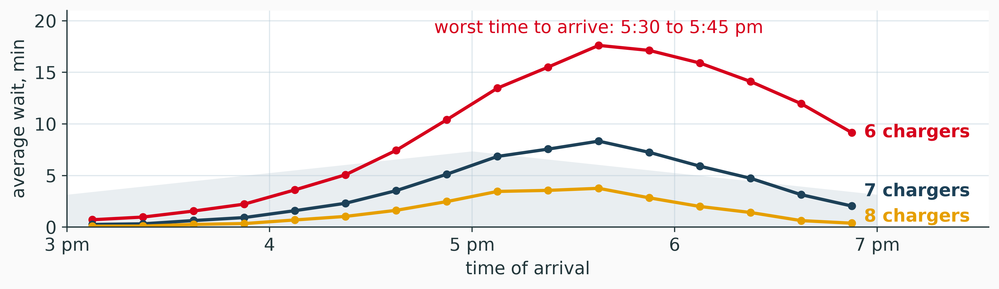
- Average wait \(= \sum \text{wait}/n = 8/10 =\) 0.8 minutes; five of ten waited.
- Utilization \(=\) busy time / elapsed time \(= 19/25 = 0.76\), near the design’s \(\rho = \lambda/\mu = 24/30 = 0.8\).
Ten customers from empty
A short run that starts empty says little about the long run. The validation section shows how long a run must be.
The Same Rule in Python
freeis the previous customer’s end.start,wait,free: the Start, Wait and End columns.- Random times by the inverse transform: an exponential gap of mean 2.5 min is \(-\ln(1 - u) \times 2.5\).
- For \(c\) servers,
freeholds \(c\) times and each customer takes the smallest (the notebook).
Validation: Known Answers and the Warm-Up Period
Validation: Recover a Known Answer
A simulation must first reproduce answers already known.
| Queue | \(W_q\) formula | Formula | Simulated |
|---|---|---|---|
| Coffee, M/M/1: \(\lambda = 24\), \(\mu = 30\) | \(\dfrac{\lambda}{\mu(\mu - \lambda)}\) | 8.00 | 7.97 ± 0.13 |
| Coffee, M/G/1: uniform 1 to 3 min | \(\dfrac{\lambda^2\sigma^2 + \rho^2}{2\lambda(1 - \rho)}\) | 4.33 | 4.32 ± 0.08 |
| Chargers, M/M/6: \(\lambda = 10\), \(1/\mu = 30\) min | \(\dfrac{P_w\,\rho}{\lambda(1 - \rho)}\) | 17.63 | 18.11 ± 0.60 |
Waits in minutes. Simulated: 20 runs of 20,000 customers, the first 2,000 dropped; ± one standard error. Formulas from the Waiting Lines lecture; M/G/1 \(\sigma^2 = (b - a)^2/12 = (3 - 1)^2/12 = 1/3\) min², \(P_w\) the probability of waiting.
The code passes
All three land within one standard error, so the code can be trusted on the charger evening.
Warm-Up: Why One Evening Averages Under 8 Minutes
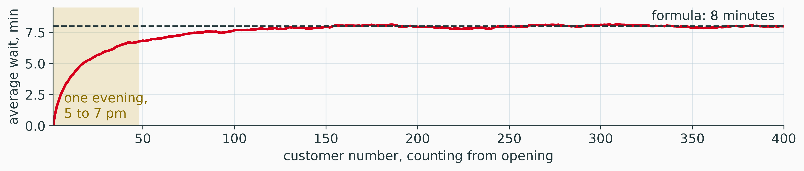
Every run starts empty. Averaged over 10,000 runs, the 25th customer waits 5.7 minutes, the 100th 7.7, and only near the 200th does the wait reach 8. An evening of \(\lambda \times 2\) hours \(= 24 \times 2 = 48\) customers averages about 5.2 minutes.
Warm up, or run long
Drop the first customers of each run, or run long: a short run from empty is biased low.
Multi-Server Simulation: Peaks and Wait Distributions
The Charger Model
- One shared line, first come, first served, to the first free charger.
- Arrivals \(\lambda(t)\): 6 an hour, rising to 14 at 5 pm, back to 6 by 7 pm.
- Charges: uniform, \(a + (b - a)\,u = 20 + 20u\) min, mean \((a + b)/2 = 30\) min; \(\mu = 60/30 = 2\)/hr.
- 1,000 evenings, the same for 6, 7 and 8 chargers; 1 to 3 pm is the warm-up.
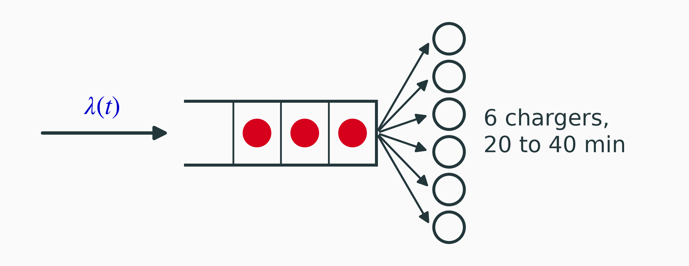
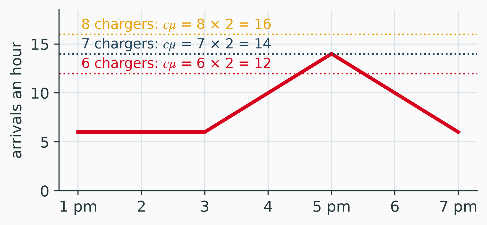
One Change at a Time
Six chargers, from the M/M/6 formula to the evening, one assumption per row:
| Model | Average wait | Over 15 minutes |
|---|---|---|
| M/M/6 formula: steady state, 10 an hour, exponential | 17.6 min | |
| One evening, 3 to 7 pm, after a quiet afternoon | 8.1 min | 20% |
| The same, charges uniform from 20 to 40 minutes | 6.1 min | 15% |
| The same, arrivals peaking at 14 an hour at 5 pm | 9.7 min | 26% |
Each change is checkable
An evening is too short to reach the formula’s steady state; less variable charges cut the wait; the peak raises it again. Each row changes one assumption, so each change in the wait has one cause.
Waits for 6, 7 and 8 Chargers
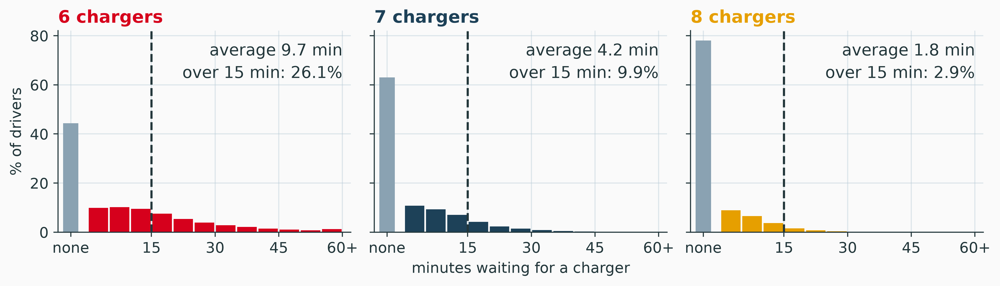
The plaza’s standard: at most 1 driver in 20 waits over 15 minutes
8 chargers meet it (2.9%, standard error 0.3); 7 leave 1 driver in 10 over 15 minutes.
When Drivers Wait

Waits peak half an hour after arrivals (shaded) do: from 4:30 the arrival rate exceeds 6 chargers’ \(c\mu = 6 \times 2 = 12\) an hour, and the line keeps growing until it falls back below. With 6 chargers, those arriving 5:30 to 5:45 wait 17.6 minutes on average.
Notebook: charger_queue.ipynb
Open charger_queue.ipynb in Google Colab
This section in numpy: the event loop, the hand table as a check, the three validation runs, the 1,000 evenings, the histograms and the waits by arrival time. Run the cells from top to bottom.
Try this
- How many chargers meet the standard “average wait under 5 minutes”?
- Raise the 5 pm peak from 14 to 16 an hour. How many chargers does the 1-in-20 standard need now?
- Make the charges exponential again. Which moves more, the average or the share over 15 minutes?
Simulation and AI: Testing Policies, Checking Code
A Simulation Tests a Policy
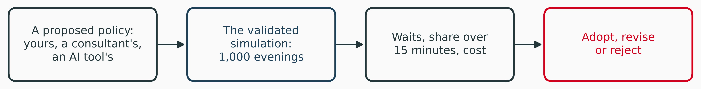
- A chatbot suggests reserving a charger for drivers who book ahead. Before any driver sees it, the plaza runs it through 1,000 simulated evenings.
- Reinforcement learning trains an artificial intelligence (AI) policy by trial and error in simulated episodes: the policy is as good as that simulation.
Validate first
A policy tested on an unvalidated simulation carries that simulation’s errors, whoever proposes it.
Ask, Then Verify: The Prompt
Paste this into ChatGPT or Gemini, word for word:
Prompt
Write a Python program, using only numpy, that simulates the coffee counter at a highway service plaza. Customers arrive at random at an average rate of 24 per hour (Poisson arrivals). One barista serves them one at a time, in order of arrival, and each service time is exponential with a mean of 2 minutes. Report the average time a customer waits in line before service starts, in minutes.
The M/M/1 formula: \(W_q = \dfrac{\lambda}{\mu(\mu - \lambda)} = \dfrac{24}{30(30 - 24)} = 0.133\) hour \(= 8\) minutes. Run the model’s code, then check it against the validation slide.
Ask, Then Verify: In Class
Do it in class
Paste the prompt into ChatGPT or Gemini, run the code it returns in Google Colab, and write down the average wait it reports. Then check the code with the four questions below.
Verify it, by reading the code and running it
- Does service start at \(\max(\text{arrival}, \text{previous end})\)? A start at the arrival time lets service begin before the previous customer finishes.
- How many replications, and what standard error? One run’s average is one estimate.
- Is a warm-up dropped, or is the run long? A short run from empty gives about 5 minutes.
- Are 24 an hour and 2 minutes in one unit? Does the answer land within two standard errors of 8?
Practice: Simulating a Queue by Hand
Practice Problem
The truck charging bay
Electric delivery trucks use the plaza’s one charging bay, first come, first served. The bay is empty when the first gap begins.
| Minutes between arrivals | 5 | 10 | 15 | 20 | 25 |
|---|---|---|---|---|---|
| Probability | 0.10 | 0.20 | 0.40 | 0.20 | 0.10 |
| Minutes of service | 6 | 12 | 18 |
|---|---|---|---|
| Probability | 0.25 | 0.50 | 0.25 |
- Build the cumulative columns and the ranges of \(u\) for both tables.
- Simulate ten trucks (arrival, start, end, wait) with the random numbers \(u\) for gaps 0.65, 0.97, 0.26, 0.72, 0.42, 0.50, 0.89, 0.52, 0.62, 0.05 and for service 0.50, 0.82, 0.53, 0.48, 0.98, 0.79, 0.75, 0.04, 0.71, 0.74.
- Find the average wait, the share of trucks that wait, and the bay’s utilization.
- With exponential times at the same means, \(\lambda = 4\) and \(\mu = 5\) an hour, M/M/1 gives \(W_q = \frac{\lambda}{\mu(\mu - \lambda)} = \frac{4}{5(1)} = 0.8\) hour \(= 48\) minutes. Give two reasons your answer is far below it.
Summary
Summary
Core takeaways
- The outcome at average inputs is not the average outcome
- Report each simulated average with its standard error, \(s/\sqrt{n}\)
- Newsvendor: order up to the critical fractile, \(F(Q^*) = C_u/(C_u + C_o)\)
- Queue simulation: start = max(arrival, previous end)
Watch out for
- Code not yet checked against a known answer
- A run that starts empty is biased low
- A difference within two standard errors is not settled
- An average wait hides the peak
- Alternatives compared on different random numbers
Bottom line
Bake from 200 to 240 pastries: the expected profits differ by $2. Install 8 chargers to keep 19 drivers in 20 under 15 minutes at the 5 pm peak.
References
Monte Carlo, replications and validation follow Law (2015) and Winston (2004); spreadsheet simulation and the Data Table, Powell and Baker (2014); the flaw of averages, Savage (2009); the newsvendor, Cachon and Terwiesch (2018); the M/G/1 formula, Gross et al. (2008).
Cachon, Gérard, and Christian Terwiesch. 2018. Matching Supply with Demand. 4th ed. McGraw-Hill Education.
Gross, Donald, John F. Shortle, James M. Thompson, and Carl M. Harris. 2008. Fundamentals of Queueing Theory. 4th ed. Wiley. https://doi.org/10.1002/9781118625651.
Law, Averill M. 2015. Simulation Modeling and Analysis. 5th ed. McGraw-Hill Education.
Powell, Stephen G., and Kenneth R. Baker. 2014. Management Science: The Art of Modeling with Spreadsheets. 4th ed. Wiley.
Savage, Sam L. 2009. The Flaw of Averages: Why We Underestimate Risk in the Face of Uncertainty. Wiley.
Winston, Wayne L. 2004. Operations Research: Applications and Algorithms. 4th ed. Duxbury Press.
Questions?
Simulation